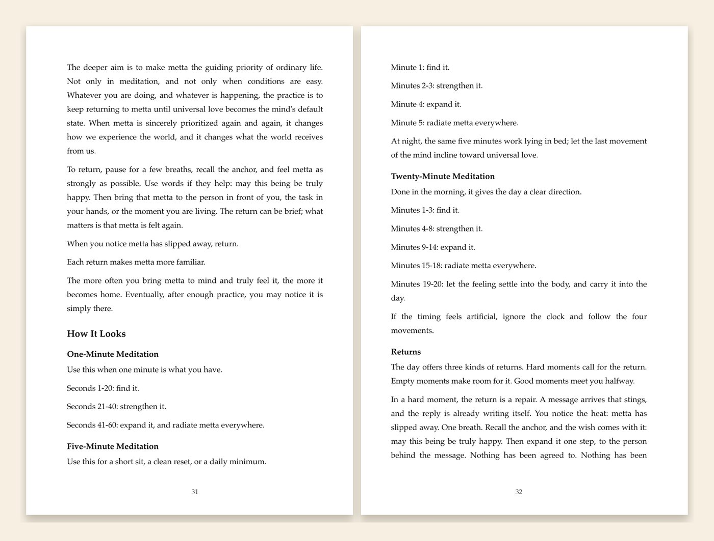

Studies of loving-kindness meditation report reduced stress and distress, in daily life and under pressure.
A 2024 meta-analysis found gains in positive emotion and reductions in negative emotion across controlled studies.
In a randomized trial with highly self-critical people, the practice reduced self-criticism and increased self-compassion.
Even brief practice increased felt social connection toward others in controlled experiments.
TWENTY YEARS OF PUBLISHED RESEARCH · 39 SOURCES, EACH VERIFIED AGAINST ITS PUBLISHER · 66 PAGES · ONE MINUTE TO FEEL IT
Try it before you spend anything
Feel it in one minute
The practice is simple enough to demonstrate right here: bring to mind a being you love, strengthen the feeling, let it spread. Sixty seconds, guided on screen — most people notice the shift the first time.

What the book holds
The studies of loving-kindness meditation read plainly — what the practice has been shown to do, with the field's limits stated as clearly as its findings. Every source in the book's 39 endnotes was verified against its publisher.
Buddhism preserved the Metta Sutta and carried it across the world. The practice is older still — its oldest trace is a prayer spoken in India centuries before the Buddha, asking to see every being with the eye of a friend.
The Sutta in the author's own translation, read line by line — then one practice: find it, strengthen it, expand it, return to it. One minute, five minutes, or twenty; morning, small returns all day, five minutes at night.
The edition
A small book, made to be kept — and given
66 pages · 6 × 9 inches · set in Palatino · the Metta Sutta in Pali and in the author's translation · 39 verified endnotes · in hardcover, ebook, and audiobook at launch.
With the book come the author's three guided recordings — one, five, and twenty minutes, no app and no subscription — and the Practice Card: the whole method on one printable page.

The launch list · 30 Days of Metta
Hear it first — and start today
The book launches soon in hardcover, ebook, and audiobook. Join the list to hear the day it's live — and start now with 30 Days of Metta, free: one short practice in your inbox each morning, the book's method paced for real life.
No spam · one practice email a day for 30 days, then only launch news · privacy
The author
Taylor Oliphant is a long-time metta practitioner, trained primarily in the tradition of Ajahn Sona of Birken Forest Monastery. He wrote this book after living and studying in Nepal for three years, where the daily overlap of Buddhist and Hindu practice convinced him that metta belongs to everyone. The book's translation of the Metta Sutta is his own, and every claim in it is sourced and verified.
Questions
Is this religious?
No religious commitment is required or requested. The book treats the Metta Sutta as what it is — a Buddhist poem gathering a practice older than Buddhism — and teaches the practice in plain language. Readers of any tradition, and of none, practice from the same pages.
I've never meditated. Can I start here?
Yes — the book assumes nothing. It was written to be the first book, readable in an evening, with a practice that begins at one sincere minute.
What does the research actually show?
Studies suggest loving-kindness practice can increase positive emotion, soften self-criticism, support people under stress, and improve social connection. The book neither hypes the findings nor hides their limits — every source in its 39 endnotes was verified against its publisher.
Is there free access?
If cost is a barrier, write to the author — the ebook and recordings are yours free, no questions asked. Generosity is the subject of the book.
When and where can I get it?
At launch, the book arrives in hardcover, ebook, and audiobook on Amazon and everywhere books are sold. Join the launch list and you'll hear the day it goes live — and 30 Days of Metta starts in your inbox the next morning, free.
May all beings look on me with the eye of a friend.
May I look on all beings with the eye of a friend.
May we look on one another with the eye of a friend.
VĀJASANEYI SAṂHITĀ 36.18 · THE BOOK'S EPIGRAPH, THREE THOUSAND YEARS OLD